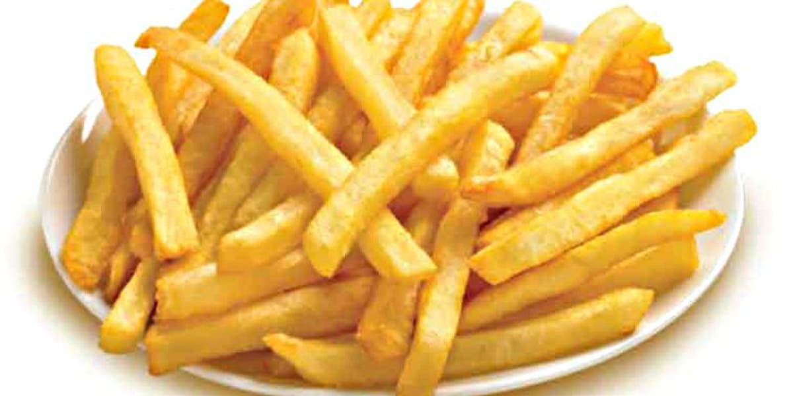

Patatas Fritas
Receta de patatas fritas caseras.

Ingredientes
- 3 ó 4 patatas (300g.)
- 4 dientes de ajo
- Aceite de oliva
- Sal
Elaboración (Pasos)
- Calentar aceite en una sartén
- Añadir las patatas cortadas, la sal y los ajos.
- Freír al gusto.
- Servir el plato.